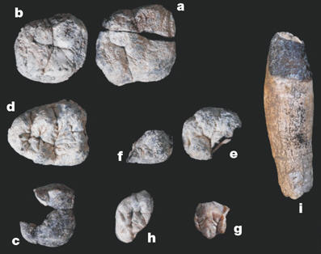
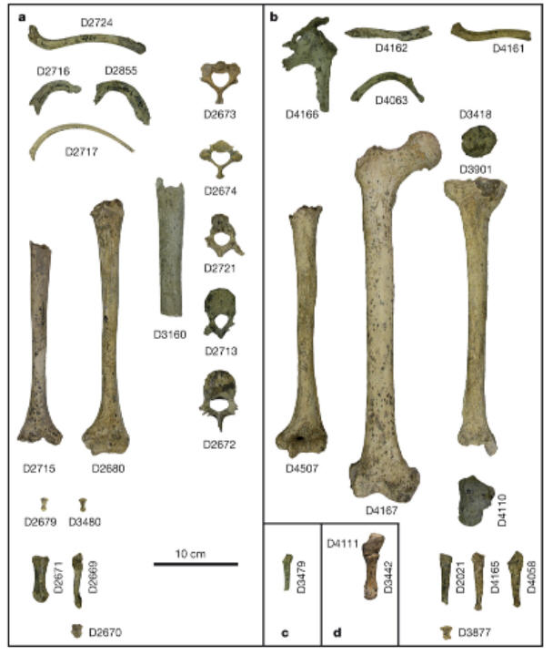

Therefore, they must be "a new species of great ape, Chororapithecus abyssinicus, from the 10-10.5-Myr-old deposits of the Chorora Formation at the southern margin of the Afar rift." 2
Therefore, they must be "a new species of great ape, Chororapithecus abyssinicus, from the 10-10.5-Myr-old deposits of the Chorora Formation at the southern margin of the Afar rift." 2| Feature Article - October 2007 |
| by Do-While Jones |
It's Halloween, and evolutionists have found some scary (to them) bones.
The only thing an evolutionist can be certain of is that he can never be certain of anything. Three different recent fossil discoveries should give evolutionists nightmares. They are some gorilla-like teeth, "hobbit" wrist bones, and newly described Homo bones from Soviet Georgia.
A new species, supposedly the ancestor of the modern gorilla, has been discovered. Here is what it looks like:
 |
|---|
|
The large-bodied ape is represented by a canine and eight partial molars from at least three, and perhaps six or more, individuals (Fig. 1, and Supplementary Information). These teeth are collectively indistinguishable from modern gorilla subspecies in dental size and represented proportions (Supplementary Information). This modest sample nevertheless exhibits substantial size variation, with molars at both the largest and smallest end of the modern gorilla ranges of variation. 1 |
These teeth are "indistinguishable from modern gorilla" teeth, but they can't be gorilla teeth because gorillas had not yet evolved. Therefore, they must be "a new species of great ape, Chororapithecus abyssinicus, from the 10-10.5-Myr-old deposits of the Chorora Formation at the southern margin of the Afar rift." 2
It's that 10 to 10.5 million-year-old part that messes up the traditional evolutionary timeline. You have probably heard evolutionists state authoritatively when the various kinds of apes and humans evolved. They seemed so certain. But, now that they want to change their story, they admit that they really didn't have much evidence for their previous fable.
|
However, because of the dearth of fossil hominoid remains in sub-Saharan Africa spanning the period 12-7 Myr ago, nothing is known of the actual timing and mode of divergence of the African ape and hominid lineages. Most genomic-based studies suggest a late divergence date--5-6 Myr ago and 6-8 Myr ago for the human-chimp and human-gorilla splits, respectively--and some palaeontological and molecular analyses hypothesize a Eurasian origin of the African ape and hominid clade. 3 Acceptance of Chororapithecus as a basal member of the gorilla clade would push back the gorilla species split to >10.5 Myr ago. Because this is a minimum date established from a meagre fossil record, the actual divergence would have predated this by an unknown time gap. From the currently available evidence, we consider that a species split of 20 Myr ago for Pongo, 12 Myr ago for Gorilla, and 9 Myr ago for Pan are all probable estimates (see Supplementary Information). 4 Gorilla or not, several experts agree that an ape of this antiquity in Africa strikes a blow at a hypothesis that the common ancestor of African apes arose in Eurasia and migrated to Africa. "These are very important fossils," says Alan Walker, a paleoanthropologist at Pennsylvania State University in State College. "They show that apes have always been in Africa--that they didn't come from Europe and Asia." 5 |
Just nine broken teeth can strike a serious blow at an evolutionary hypothesis.
|
If Chororapithecus is indeed an early gorilla, that would push back the origins of the gorilla lineage to at least 10 million years ago and perhaps further, says Suwa. That in turn could force researchers to recalibrate their estimates of rates of genetic change, which could change the timing of many events on the ape family tree. For example, the orangutan lineage may have split off around 20 million years ago, rather than 13 million years ago as previously thought, says Suwa. 6 |
Three years ago we told you why the discovery of Homo floresiensis is so troubling to evolutionists. 7 It still troubles them.
|
... in 2003, the skull and skeleton of a meter-tall adult woman were unearthed. Ever since, experts have sparred over the "hobbit": Is it an astonishingly primitive species with a tiny head, dubbed Homo floresiensis, or a diseased member of our species, H. sapiens? The stakes are high. A new species shakes to the core ideas about the defining role of big brains in our genus and about relations among hominids. The hobbit bones are dated to as recently as 12,000 years ago, so the diminutive hominid must have lingered on Flores for thousands of years while modern humans colonized nearby islands. The tiny human suggests that big brains aren't required for making tools--and, according to a theory proposed by the hobbit's discoverers, may imply that the first hominid migrated out of Africa far earlier than anyone had thought. "Flores is the thorn in the flesh. [It implies] that we have to rethink everything," says anthropologist Marcia Ponce de León of the University of Zurich in Switzerland. 8 |
Many evolutionists have tried very hard to show that Homo floresiensis is just a very small, diseased, modern human because it really messes up the theory of evolution if it isn't. Evidence that it really is a different species is not good news for them. This new report in Science was really bad news for them.
|
Analysis of three wrist bones from the holotype specimen (LB1) shows that it retains wrist morphology that is primitive for the African ape-human clade. In contrast, Neandertals and modern humans share derived wrist morphology that forms during embryogenesis, which diminishes the probability that pathology could result in the normal primitive state. This evidence indicates that LB1 is not a modern human with an undiagnosed pathology or growth defect; rather, it represents a species descended from a hominin ancestor that branched off before the origin of the clade that includes modern humans, Neandertals, and their last common ancestor. 9 Our diverse modern human sample includes a pituitary dwarf (USNM 314306) and a pituitary giant (USNM 227508) (tables S1 and S2). Both show normal modern human carpal shapes and articular configurations despite their abnormal sizes, demonstrating that LB1's wrist morphology is not the result of allometric scaling, errors in metabolism, or a skeletal growth disorder. 10 |
There really aren't that many fossils of our supposed apelike ancestors. What fossils do exist tend to be broken fragments.
|
"We've got Lucy's body and then Nariokotome, and this gap in the middle with a lot of scrappy stuff in between," says paleoanthropologist Susan Antón of New York University. The earliest of those in-between fossils have been called H. habilis, which is something of a grab bag species for specimens too small or primitive to be considered H. erectus. 11 ... the postcranial morphology of earliest Homo (cf. H. habilis) is known from only a few fragmentary specimens (for example, OH35, OH62, KNM-ER3735 (refs 32-35)) dated between 1.75- and 1.9-Myr ago, such that inferences regarding the evolution of stature and limb proportions in this genus are a matter of ongoing debate. The first well-documented evidence for the postcranium of genus Homo comes from the KNM-WT15000 specimen, dated to approximately 1.55 Myr ago, the body proportions and stature of which are modern in almost every aspect. Information about the transition from australopith-like to modern-human-like postcranial morphologies is thus rather limited, and the Dmanisi postcranial material fills significant gaps in our knowledge about this critical period of hominin evolution. 12 |
The Dmanisi postcranial material they found is this:
 |
|---|
You can clearly see what these creatures looked like from these bones!
|
Now the discovery of incredibly rare trunk and limb bones of early H. erectus shows that the species wasn't always so tall and brainy--and, according to some interpretations, suggests that it may have emerged in Asia, not Africa. 13 But not everyone agrees. The bones are so primitive that a few researchers aren't even sure they are members of Homo. "They are truly transitional forms that are neither archaic hominins nor unambiguous members of our own genus," says paleoanthropologist Bernard Wood of George Washington University in Washington, D.C. Lordkipanidze thinks the fossils were either very early H. erectus or "the best candidates to be the ancestors of H. erectus." He suggests that they arose in Asia from an early Homo that was part of a very early radiation out of Africa. Some of the Dmanisi fossils' descendents returned to Africa while others spread out later into Asia as full-fledged H. erectus. Paleoanthropologist Alan Walker of Pennsylvania State University in State College doesn't buy that scenario. He and Antón prefer a model in which the species arose in Africa and continued to evolve separately on different continents--including at Dmanisi--giving rise to variation as it adapted to different habitats. 14 The debate reflects how little is known about the murky period at the dawn of our genus, partly because there are so few fossils of postcranial bones. 15 |
Despite this, you better believe the evolutionists' latest story!
| Quick links to | |
|---|---|
| Science Against Evolution Home Page |
Back issues of Disclosure (our newsletter) |
| Web Site of the Month |
Topical Index |
Footnotes:
1
Suwa, et al., Nature, 23 August 2007, "A new species of great ape from the late Miocene epoch in Ethiopia", pp 921-924, https://www.nature.com/articles/nature06113
2
ibid.
3
ibid.
4
ibid.
5
Gibbons, Science, 24 August 2007, "PALEOANTHROPOLOGY: Fossil Teeth From Ethiopia Support Early, African Origin for Apes", pp. 1016 - 1017, https://www.science.org/doi/10.1126/science.317.5841.1016a
6
New Scientist, 25 August 2007, "New gorilla species rewrites ape evolution", page 12, https://www.newscientist.com/article/mg19526182-500-new-ape-species-rewrites-our-evolutionary-history/
7
Disclosure, November 2004, "Homo floresiensis"
8
Culotta, Science, 10 August 2007, "PALEOANTHROPOLOGY: The Fellowship of the Hobbit" pp. 740 - 742, https://www.science.org/doi/10.1126/science.317.5839.740
9
Tocheri, et al., Science, 21 September 2007, "The Primitive Wrist of Homo floresiensis and Its Implications for Hominin Evolution", pp. 1743 - 1745, https://www.science.org/doi/10.1126/science.1147143
10
ibid.
11
Gibbons, Science, 21 September 2007, "PALEOANTHROPOLOGY: A New Body of Evidence Fleshes Out Homo erectus", p. 1664, https://www.science.org/doi/10.1126/science.317.5845.1664
12
Lordkipanidze et al., Nature, 20 September 2007, "Postcranial evidence from early Homo from Dmanisi, Georgia", pp. 305-310, https://www.nature.com/articles/nature06134
13
Gibbons, Science, 21 September 2007, "PALEOANTHROPOLOGY: A New Body of Evidence Fleshes Out Homo erectus", p. 1664, https://www.science.org/doi/10.1126/science.317.5845.1664
14
ibid.
15
ibid.